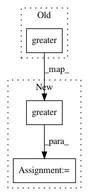

0b4c25fe8448982fbcb51c860d5030f75f03621c,geomstats/invariant_metric.py,InvariantMetric,__init__,#InvariantMetric#Any#Any#Any#,23
Before Change
assert left_or_right in ("left", "right")
eigenvalues = gs.linalg.eigvalsh(inner_product_mat_at_identity)
n_pos_eigval = gs.sum(gs.greater(eigenvalues, 0))
n_neg_eigval = gs.sum(gs.less(eigenvalues, 0))
n_null_eigval = gs.sum(gs.isclose(eigenvalues, 0))
n_eigval = n_pos_eigval + n_neg_eigval + n_null_eigval
After Change
assert left_or_right in ("left", "right")
eigenvalues = gs.linalg.eigvalsh(inner_product_mat_at_identity)
mask_pos_eigval = gs.greater(eigenvalues, 0)
n_pos_eigval = gs.sum(gs.cast(mask_pos_eigval, gs.int32))
mask_neg_eigval = gs.less(eigenvalues, 0)
n_neg_eigval = gs.sum(gs.cast(mask_neg_eigval, gs.int32))
mask_null_eigval = gs.isclose(eigenvalues, 0)
n_null_eigval = gs.sum(gs.cast(mask_null_eigval, gs.int32))
In pattern: SUPERPATTERN
Frequency: 3
Non-data size: 3
Instances
Project Name: geomstats/geomstats
Commit Name: 0b4c25fe8448982fbcb51c860d5030f75f03621c
Time: 2018-09-27
Author: johan.mathe@gmail.com
File Name: geomstats/invariant_metric.py
Class Name: InvariantMetric
Method Name: __init__
Project Name: tensorflow/transform
Commit Name: 272ed47792d171285b971f0cd63c16d248e35b96
Time: 2020-07-13
Author: tf-transform-dev@google.com
File Name: tensorflow_transform/tf_utils.py
Class Name:
Method Name: _num_terms_and_factors
Project Name: tensorflow/models
Commit Name: 52bb4ab1d8dd42f033762b698a8acffc1b639387
Time: 2020-07-08
Author: rathodv@google.com
File Name: research/object_detection/eval_util.py
Class Name:
Method Name: _resize_detection_masks